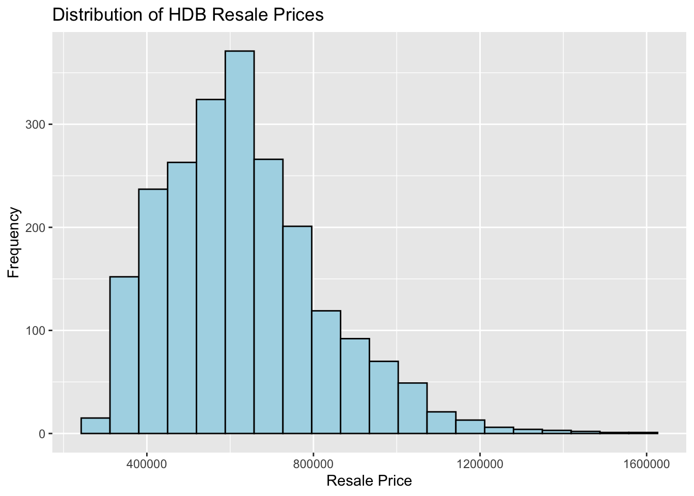
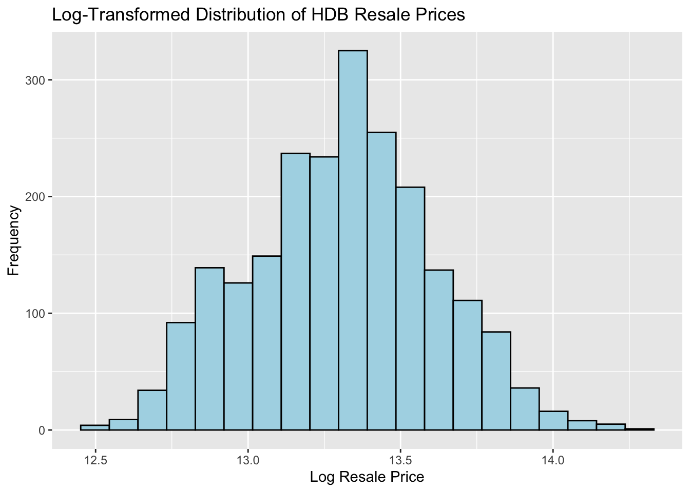
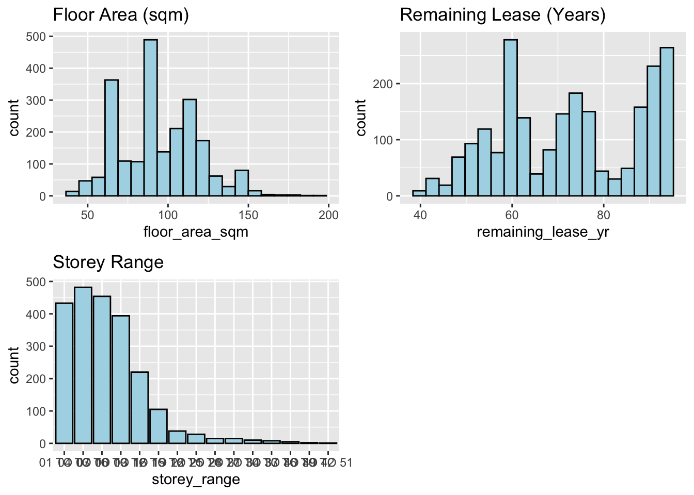
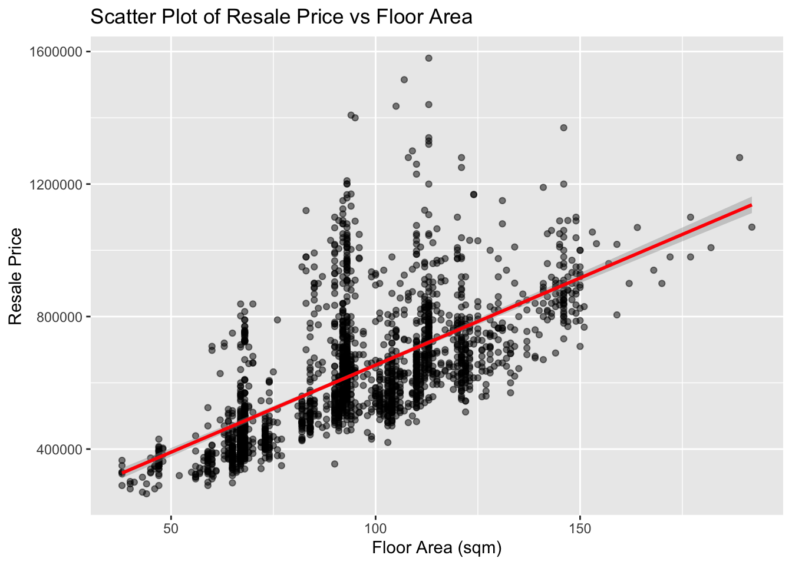

# Load necessary packages
pacman::p_load(tidyverse, sf, spdep, GWmodel, tmap, caret, ranger, httr, jsonlite, ggplot2, ggpubr)Take-home Exercise 3b: Predicting HDB Resale Prices with Geographically Weighted Machine Learning Methods
1. Overview
This exercise focuses on predicting HDB resale prices in Singapore using geographically weighted machine learning methods. By incorporating spatial components, we aim to understand regional patterns and improve prediction accuracy.
2. Objectives
The goals of this exercise are to:
- Apply geographically weighted machine learning models to predict HDB resale prices.
- Assess the performance of different models, including random forest and geographically weighted random forest (GWRF).
- Visualize and interpret spatial variations in predicted prices.
3. Getting Started
3.1 Required Packages
In this exercise, we will use the following packages:
| Package | Description |
|---|---|
| sf | Provides functions for reading, processing, and visualizing spatial data in the “Simple Features” format, enabling spatial data handling in R. |
| spdep | Provides tools for spatial dependency modeling, including spatial weights and measures for spatial autocorrelation, such as Moran’s I, useful for detecting spatial patterns. |
| tidyverse | A suite of R packages designed for data manipulation (dplyr, tidyr), visualization (ggplot2), and other common data science tasks, improving data handling and analysis. |
| tmap | A flexible package for creating static and interactive maps, allowing cartographic-quality visualizations of spatial data. |
| GWmodel | Contains functions for Geographically Weighted Regression (GWR) and other spatially weighted models, allowing local modeling of spatial data where relationships can vary across geographic space. |
| caret | A comprehensive package for machine learning, providing tools for model training, tuning, and evaluation, supporting methods like cross-validation and hyperparameter tuning. |
| ranger | An efficient implementation of the random forest algorithm optimized for large datasets, used for predictive modeling and capable of handling both classification and regression tasks. |
| httr | Facilitates HTTP requests in R, useful for connecting to APIs like OneMap to retrieve geographic coordinates based on addresses. |
| jsonlite | A package for working with JSON data in R, enabling easy conversion of JSON data from web APIs into R data frames. |
3.2 The Data
Dataset Name Description Format Source HDB Resale Transactions Monthly data on HDB resale transactions, including prices, flat types, and locations. CSV Singapore Open Data Portal Geographical Coordinates Coordinates for each address to map locations. API OneMap API
4. Data Preprocessing
4.1 Loading and Filtering Resale Data
4.1.1 Geospatial Data
mpsz <- st_read(dsn = "data/geospatial", layer = "MP14_SUBZONE_WEB_PL") %>%
st_transform(3414)Reading layer `MP14_SUBZONE_WEB_PL' from data source
`/Users/lucasluo/Desktop/SMU/Courses/Term3 Aug-Dec/ISSS626-Geospatial Analytics and Applications/lucasluo6/ISSS626/Take-home_Ex/Take-home_Ex03/data/geospatial'
using driver `ESRI Shapefile'
Simple feature collection with 323 features and 15 fields
Geometry type: MULTIPOLYGON
Dimension: XY
Bounding box: xmin: 2667.538 ymin: 15748.72 xmax: 56396.44 ymax: 50256.33
Projected CRS: SVY21bus_stops <- st_read(dsn = "data/geospatial", layer = "BusStop") %>%
st_transform(crs = 3414)Reading layer `BusStop' from data source
`/Users/lucasluo/Desktop/SMU/Courses/Term3 Aug-Dec/ISSS626-Geospatial Analytics and Applications/lucasluo6/ISSS626/Take-home_Ex/Take-home_Ex03/data/geospatial'
using driver `ESRI Shapefile'
Simple feature collection with 5166 features and 3 fields
Geometry type: POINT
Dimension: XY
Bounding box: xmin: 3970.122 ymin: 26482.1 xmax: 48285.52 ymax: 52983.82
Projected CRS: SVY21train_stations <- st_read(dsn = "data/geospatial", layer = "RapidTransitSystemStation") %>%
st_transform(crs = 3414)Reading layer `RapidTransitSystemStation' from data source
`/Users/lucasluo/Desktop/SMU/Courses/Term3 Aug-Dec/ISSS626-Geospatial Analytics and Applications/lucasluo6/ISSS626/Take-home_Ex/Take-home_Ex03/data/geospatial'
using driver `ESRI Shapefile'Warning in CPL_read_ogr(dsn, layer, query, as.character(options), quiet, : GDAL
Message 1: Non closed ring detected. To avoid accepting it, set the
OGR_GEOMETRY_ACCEPT_UNCLOSED_RING configuration option to NOSimple feature collection with 230 features and 5 fields
Geometry type: POLYGON
Dimension: XY
Bounding box: xmin: 6068.209 ymin: 27478.44 xmax: 45377.5 ymax: 47913.58
Projected CRS: SVY21hawker_center <- st_read("data/geospatial/HawkerCentresGEOJSON.geojson") %>%
st_transform(crs = 3414)Reading layer `HawkerCentresGEOJSON' from data source
`/Users/lucasluo/Desktop/SMU/Courses/Term3 Aug-Dec/ISSS626-Geospatial Analytics and Applications/lucasluo6/ISSS626/Take-home_Ex/Take-home_Ex03/data/geospatial/HawkerCentresGEOJSON.geojson'
using driver `GeoJSON'
Simple feature collection with 125 features and 2 fields
Geometry type: POINT
Dimension: XYZ
Bounding box: xmin: 103.6974 ymin: 1.272716 xmax: 103.9882 ymax: 1.449017
z_range: zmin: 0 zmax: 0
Geodetic CRS: WGS 84Clinics <- st_read("data/geospatial/CHASClinics.geojson") %>%
st_transform(crs = 3414)Reading layer `CHASClinics' from data source
`/Users/lucasluo/Desktop/SMU/Courses/Term3 Aug-Dec/ISSS626-Geospatial Analytics and Applications/lucasluo6/ISSS626/Take-home_Ex/Take-home_Ex03/data/geospatial/CHASClinics.geojson'
using driver `GeoJSON'
Simple feature collection with 1193 features and 2 fields
Geometry type: POINT
Dimension: XYZ
Bounding box: xmin: 103.5818 ymin: 1.016264 xmax: 103.9903 ymax: 1.456037
z_range: zmin: 0 zmax: 0
Geodetic CRS: WGS 84supermarkets <- st_read("data/geospatial/SupermarketsGEOJSON.geojson") %>%
st_transform(crs = 3414)Reading layer `SupermarketsGEOJSON' from data source
`/Users/lucasluo/Desktop/SMU/Courses/Term3 Aug-Dec/ISSS626-Geospatial Analytics and Applications/lucasluo6/ISSS626/Take-home_Ex/Take-home_Ex03/data/geospatial/SupermarketsGEOJSON.geojson'
using driver `GeoJSON'
Simple feature collection with 526 features and 2 fields
Geometry type: POINT
Dimension: XYZ
Bounding box: xmin: 103.6258 ymin: 1.24715 xmax: 104.0036 ymax: 1.461526
z_range: zmin: 0 zmax: 0
Geodetic CRS: WGS 84schoolzone <- st_read("data/geospatial/LTASchoolZone.geojson") %>%
st_transform(crs = 3414)Reading layer `LTASchoolZone' from data source
`/Users/lucasluo/Desktop/SMU/Courses/Term3 Aug-Dec/ISSS626-Geospatial Analytics and Applications/lucasluo6/ISSS626/Take-home_Ex/Take-home_Ex03/data/geospatial/LTASchoolZone.geojson'
using driver `GeoJSON'
Simple feature collection with 211 features and 2 fields
Geometry type: MULTIPOLYGON
Dimension: XY, XYZ
Bounding box: xmin: 103.687 ymin: 1.272736 xmax: 103.9668 ymax: 1.457587
z_range: zmin: 0 zmax: 0
Geodetic CRS: WGS 84Warning in CPL_transform(x, crs, aoi, pipeline, reverse, desired_accuracy, :
GDAL Message 1: Sub-geometry 0 has coordinate dimension 2, but container has 3Warning in CPL_transform(x, crs, aoi, pipeline, reverse, desired_accuracy, :
GDAL Message 1: Sub-geometry 1 has coordinate dimension 2, but container has 3resale <- read_csv("data/aspatial/resale.csv") %>%
filter(month >= "2023-01" & month <= "2024-09")Rows: 192613 Columns: 11
── Column specification ────────────────────────────────────────────────────────
Delimiter: ","
chr (8): month, town, flat_type, block, street_name, storey_range, flat_mode...
dbl (3): floor_area_sqm, lease_commence_date, resale_price
ℹ Use `spec()` to retrieve the full column specification for this data.
ℹ Specify the column types or set `show_col_types = FALSE` to quiet this message.4.2 Data Transformation
resale_tidy <- resale %>%
mutate(address = paste(block,street_name)) %>%
mutate(remaining_lease_yr = as.integer(
str_sub(remaining_lease, 0, 2)))%>%
mutate(remaining_lease_mth = as.integer(
str_sub(remaining_lease, 9, 11)))4.3 Selecting September 2024 Transactions and Unique Addresses
resale_selected <- resale_tidy %>%
filter(month == "2024-09")add_list <- sort(unique(resale_selected$address))4.4 Geocoding Addresses with OneMap API
get_coords <- function(add_list){
# Create a data frame to store all retrieved coordinates
postal_coords <- data.frame()
for (i in add_list){
#print(i)
r <- GET('https://www.onemap.gov.sg/api/common/elastic/search?',
query=list(searchVal=i,
returnGeom='Y',
getAddrDetails='Y'))
data <- fromJSON(rawToChar(r$content))
found <- data$found
res <- data$results
# Create a new data frame for each address
new_row <- data.frame()
# If single result, append
if (found == 1){
postal <- res$POSTAL
lat <- res$LATITUDE
lng <- res$LONGITUDE
new_row <- data.frame(address= i,
postal = postal,
latitude = lat,
longitude = lng)
}
# If multiple results, drop NIL and append top 1
else if (found > 1){
# Remove those with NIL as postal
res_sub <- res[res$POSTAL != "NIL", ]
# Set as NA first if no Postal
if (nrow(res_sub) == 0) {
new_row <- data.frame(address= i,
postal = NA,
latitude = NA,
longitude = NA)
}
else{
top1 <- head(res_sub, n = 1)
postal <- top1$POSTAL
lat <- top1$LATITUDE
lng <- top1$LONGITUDE
new_row <- data.frame(address= i,
postal = postal,
latitude = lat,
longitude = lng)
}
}
else {
new_row <- data.frame(address= i,
postal = NA,
latitude = NA,
longitude = NA)
}
# Add the row
postal_coords <- rbind(postal_coords, new_row)
}
return(postal_coords)
}coords <- get_coords(add_list)4.5 Saving the Geocoded Coordinates
write_rds(coords, "data/rds/coords.rds")4.6 Data Wrangling and Joining Coordinates
# Join coordinates with filtered resale data
resale_geo <- resale_selected %>%
left_join(coords, by = "address") %>%
filter(!is.na(latitude) & !is.na(longitude))5. Exploratory Data Analysis (EDA)
In this section, we’ll use statistical graphics functions from packages like ggplot2 and tmap to conduct exploratory data analysis (EDA) of HDB resale data. This analysis will help us understand the feature distributions and spatial patterns of the data.
5.1 Analyzing HDB Resale Price Distribution
We start by plotting the distribution of resale prices to observe skewness or outliers in the data. The code below creates an initial histogram of resale price distribution:
# Histogram showing HDB resale price distribution
ggplot(data = resale_geo, aes(x = resale_price)) +
geom_histogram(bins = 20, color = "black", fill = "light blue") +
labs(title = "Distribution of HDB Resale Prices", x = "Resale Price", y = "Frequency")
5.2 Log Transformation of Price Distribution
Log-transforming resale prices can help reduce skewness, making the model more stable when handling price data. The following code creates a histogram for the log-transformed resale prices:
# Log transformation
resale_geo <- resale_geo %>%
mutate(log_resale_price = log(resale_price))
# Plotting log-transformed price distribution
ggplot(data=resale_geo, aes(x=log_resale_price)) +
geom_histogram(bins=20, color="black", fill="light blue") +
labs(title = "Log-Transformed Distribution of HDB Resale Prices", x = "Log Resale Price", y = "Frequency")
After log transformation, the distribution shows less skewness, which can help stabilize model performance.
5.3 Distribution Analysis of Multiple Variables
To better understand the distribution of other important variables, we can generate multiple histograms using ggarrange(). The code below shows histograms for floor area, remaining lease, storey range, and other key features:
# Individual histograms for several variables
floor_area <- ggplot(data=resale_geo, aes(x=floor_area_sqm)) +
geom_histogram(bins=20, color="black", fill="light blue") + labs(title = "Floor Area (sqm)")
remaining_lease <- ggplot(data=resale_geo, aes(x=remaining_lease_yr)) +
geom_histogram(bins=20, color="black", fill="light blue") + labs(title = "Remaining Lease (Years)")
storey_range <- ggplot(data=resale_geo, aes(x=storey_range)) +
geom_bar(color="black", fill="light blue") + labs(title = "Storey Range")
# Combine histograms using ggarrange()
ggarrange(floor_area, remaining_lease, storey_range, ncol = 2, nrow = 2)
These multiple variable distribution plots allow us to better understand the range and shape of each feature.
5.4 Spatial Distribution of Resale Prices
By visualizing the spatial distribution of HDB resale prices, we can observe price differences across regions and identify potential spatial clustering patterns.
This map shows the spatial distribution of HDB resale prices, helping identify regions with high and low resale prices.
5.5 Analyzing the Relationship Between Price and Other Variables
We can use scatter plots to explore relationships between different variables, such as resale price and floor area, resale price and remaining lease, etc. The code below creates a scatter plot between price and floor area:
# Scatter plot for resale price vs floor area
ggplot(data=resale_geo, aes(x=floor_area_sqm, y=resale_price)) +
geom_point(alpha=0.5) +
labs(title = "Scatter Plot of Resale Price vs Floor Area", x = "Floor Area (sqm)", y = "Resale Price") +
geom_smooth(method="lm", color="red")`geom_smooth()` using formula = 'y ~ x'
5.6 Correlation Matrix of Features
By visualizing a correlation matrix heatmap, we can identify highly correlated features, which may help in feature selection for subsequent modeling.